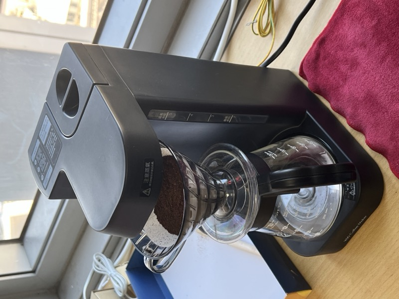
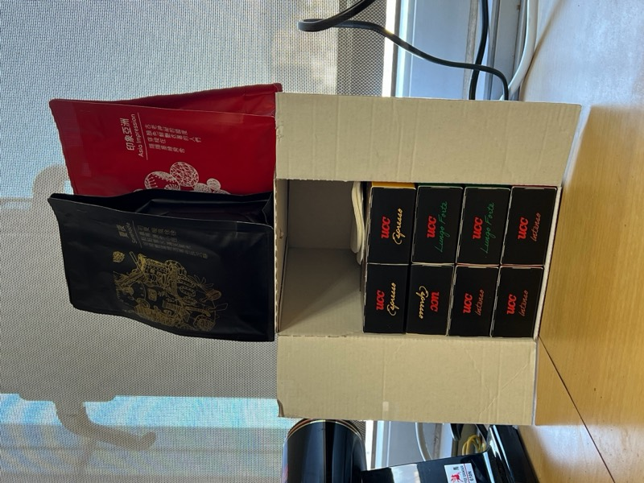
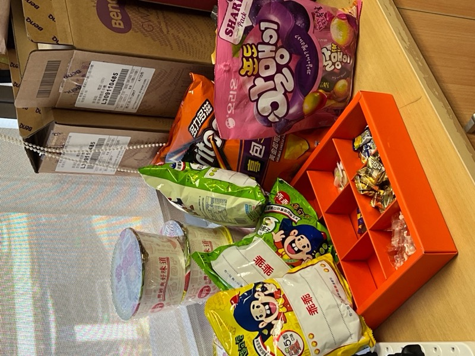
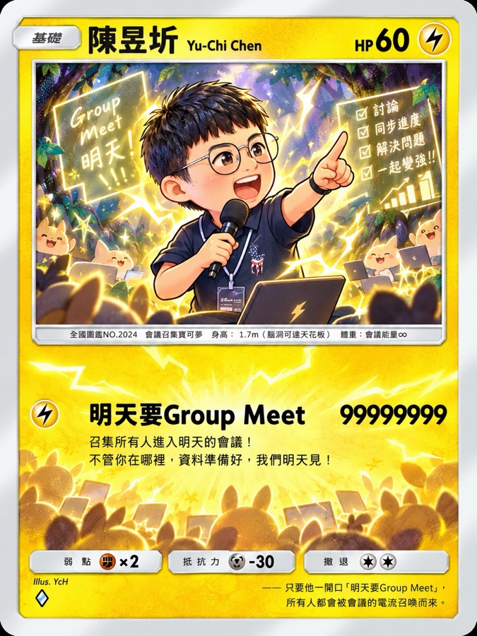

CIS Lab @ Taipei Tech
密碼學與資訊安全實驗室
關於我們
密碼學與資訊安全實驗室(Cryptography and Information Security Lab)由陳昱圻博士主持，於2016年7月於元智大學資訊工程學系成立，於2023年7月轉至國立臺北科技大學資訊工程系。研究方向：主要是密碼學、資訊安全、隱私強化技術。（這句話最嚴肅是老師自己打的）
實驗室真實概況是充滿愛與歡樂的實驗室~
但是對於研究是非常認真謹慎~
這裡很好玩，有零食櫃以及冰箱，滿足空虛的心與胃^^
研究方向原則上都有主軸，但只要有相關興趣主題都可以提出!
(以上言論本實驗室保留最後解釋權)XD
- 2016成立於元智大學
- 2023移至臺北科技大學
- 研究主軸密碼學、資訊安全、隱私強化技術
實驗室一角



實驗室生活
出遊、聚餐、研討會與各種活動的紀錄。滑鼠移到照片上可以看說明，點照片會像 IG 貼文一樣打開。
相簿整理中，敬請期待！
實驗室成員

點成員的名字可以看個人網頁、Email 等資訊。
Loading…
從實驗室畢業的學長姐們，名字旁標示碩士或博士。點名字可以看他們的近況。
畢業年份
Loading…
研究計畫
- 保有隱私機器學習與隱私強化技術
- 安全分散式計算與相關雲端資料應用
- 零知識證明協定實現可壓縮驗證於機器學習
- 資料分發服務上的隱私與安全存取於機器人系統
- 教育部資安人才培育計畫 (這不是研究或產學)
研究成果
聯絡我們
-
Email
cislab.taipeitech AT gmail.com
-
交通
鄰近捷運忠孝新生站（板南線、中和新蘆線）